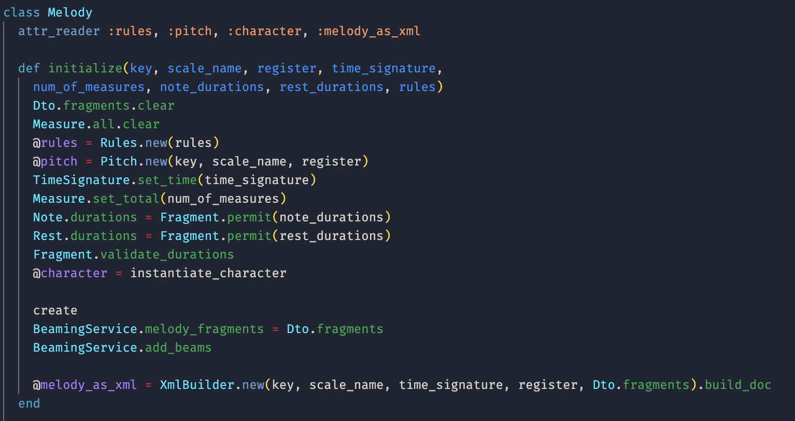
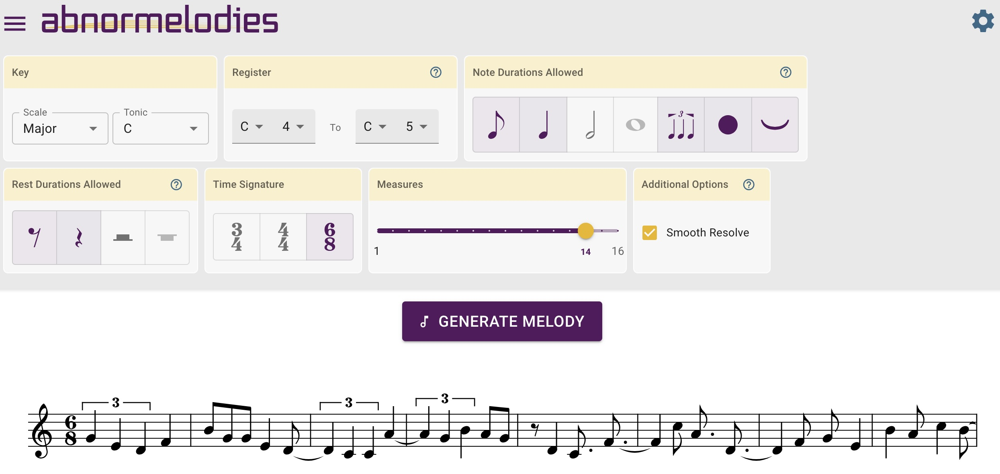
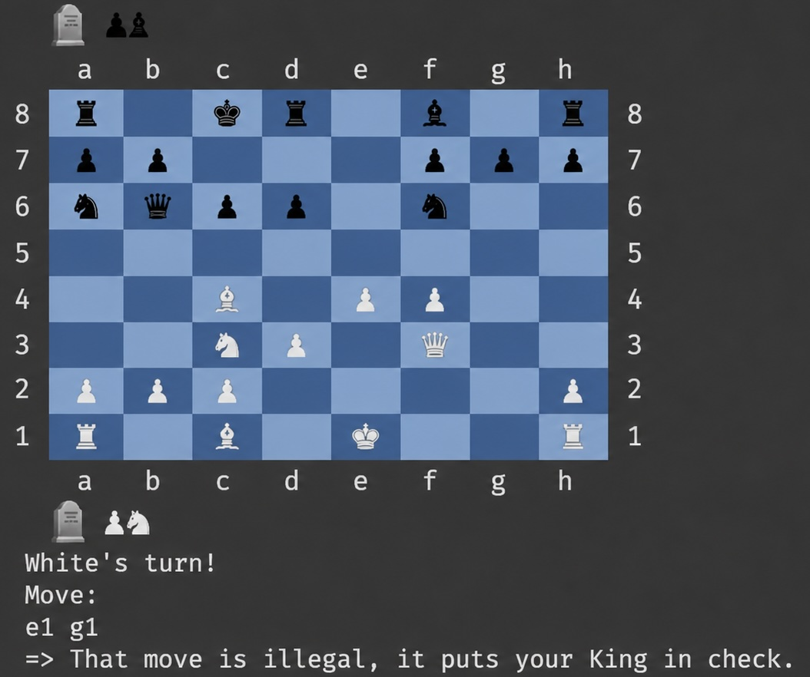
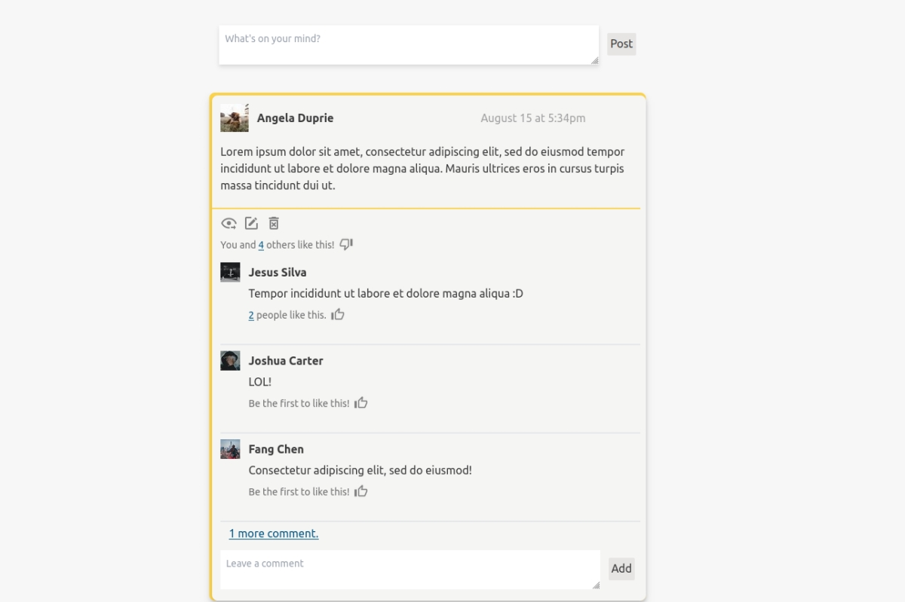
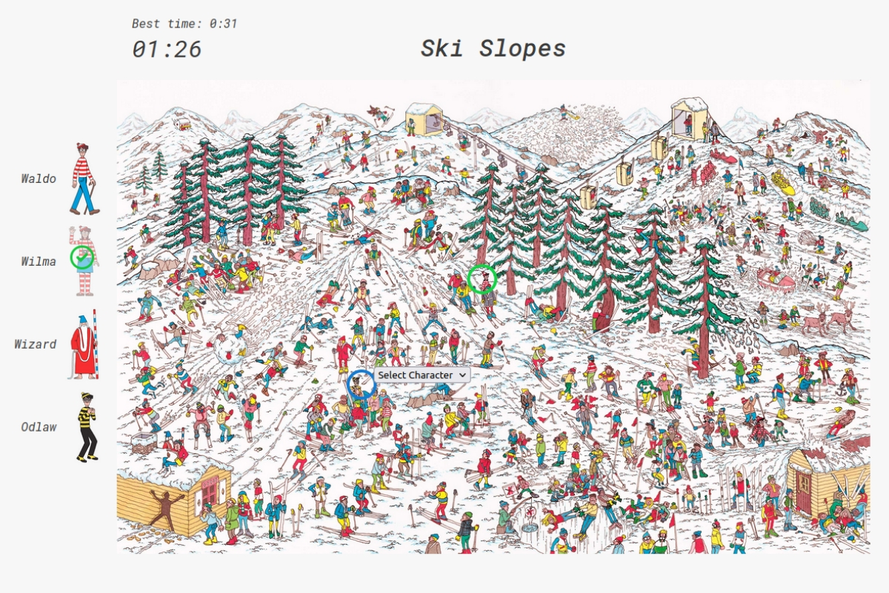
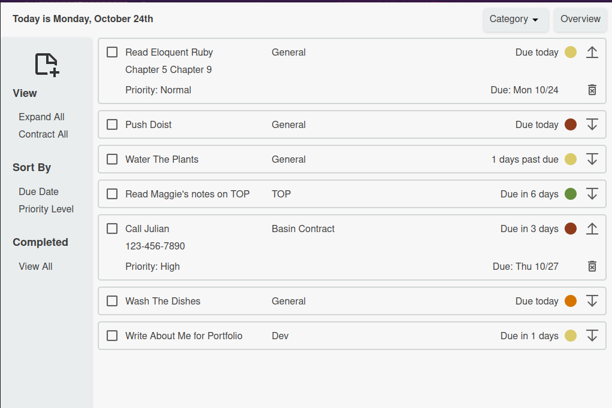

Nikki Brusoe

I'm a self-taught software engineer who is as passionate about complex systems as I am about
designing the architectures that make those systems easier to express, evolve, and reason about
over time. My current work explores procedural generation, simulations, artificial life, and
emergent
behavior.
What began as an interest in programming gradually became an interest in modeling worlds. I'm
especially drawn to curiosity-driven software that invites exploration rather than simply
providing answers. Whether the medium is music, games, or simulated ecosystems, I enjoy
designing systems that feel alive through the interactions of their individual parts.
Today I'm focused on completing my Computer Science degree while working on Mossworld, a cozy
artificial life simulation written in modern C++. Through it, I'm exploring the
intersection of simulation architecture, agent behavior, and emergent systems.
Selected Projects

Abnormelodies API

A procedural melody generation engine that transforms musical constraints into original melodies and fully notated MusicXML.
Built while teaching myself Ruby, this project became a deep exploration of procedural generation, rule-based systems, and object-oriented architecture. It was the project where I first recognized the kind of software I most enjoy building.
Tech: Ruby, Rails, MusicXML, PostgreSQL, Nokogiri

Abnormelodies UI
An interactive React playground for exploring procedurally generated melodies through notation, browser-based playback, and guided music theory.
Designed to compliment the Abnormelodies API, this interface turned a procedural generation engine into an accessible, creative, and educational experience.
Tech: React, ToneJs, OpenSheetMusicDisplay, Material UI, Axios, reCAPTCHA

Chess
A command-line implementation of chess focused on object-oriented design, rule modeling, and comprehensive move validation.
Built to explore how a complex ruleset can be expressed through clear domain modeling and maintainable software architecture.
Tech: Ruby, YAML

People Pages
A social networking application implementing user profiles, posts, comments, friendships, and personalized newsfeeds.
Built to explore relational data modeling, authentication, and organizing complex CRUD behavior within a full-stack Rails application.
Tech: Ruby on Rails, Turbo, Tailwind CSS, PostgreSQL, Devise

Where's Waldo
An interactive implementation of the classic puzzle books featuring progressively challenging scenes, character tracking, and timer-based gameplay.
Built to explore DOM manipulation, asynchronous Rails communication with vanilla JavaScript, and managing interactive game state without a frontend framework.
Tech: Ruby on Rails, Javascript, PostgreSQL, AJAX

Do-ist Task Manager
A task management application featuring hierarchical organization, dynamic sorting, and expandable task views.
Built to explore modular frontend architecture using ES6 Modules and Webpack while organizing complex client-side behavior into maintainable, single-purpose components.
Tech: Javascript, Webpack, HTML, CSS, LocalStorage
Let's Connect
I'm interested in opportunities involving complex systems, simulation, artificial life, and emergent behavior. If you think we might be a good fit to build together, I'd love to hear from you.